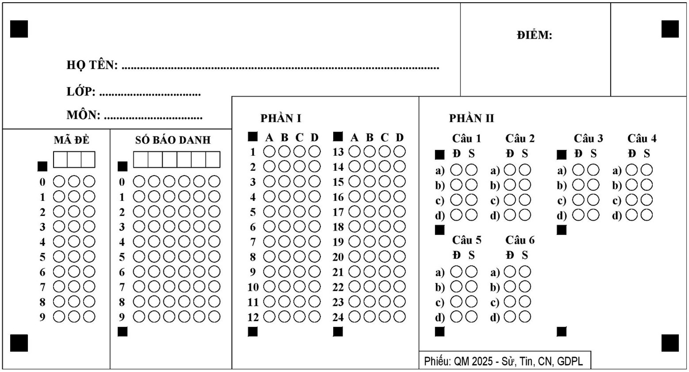
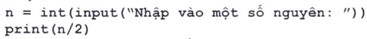
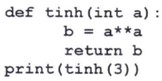
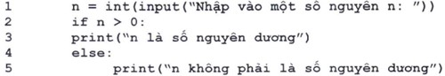
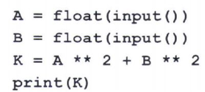
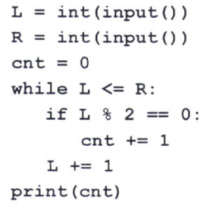

|
SỞ GD&ĐT TP……..
TRƯỜNG THPT ……………….
--------------------
(Đề thi có ___ trang)
|
KIỂM TRA HỌC KỲ I
NĂM HỌC 2023 - 2024
MÔN: __________________
Thời gian làm bài: ___ phút
(không kể thời gian phát đề)
|
| Họ và tên: ............................................................................ |
Số báo danh: ....... |
Mã đề 000
|

Đề bài
PHẦN I. Câu trắc nghiệm nhiều phương án lựa chọn. Thí sinh trả lời từ câu 1 đến câu 12. Mỗi câu hỏi thí sinh chỉ chọn một phương án.
Câu 1. Phát biểu nào sau đây nói về tính ưu việt của việc lưu trữ thông tin trên thiết bị số?
A. Dữ liệu không thể bị xóa.
B. Dữ liệu được đảm bảo an toàn tuyệt đối.
C. Lượng thông tin lưu trữ phụ thuộc hoàn toàn vào kích thước thiết bị.
D. Lưu trữ được một lượng dữ liệu lớn.
Câu 2. Đẳng thức nào sau đây đúng về đơn vị lưu trữ thông tin?
A. 1GB=1024KB. B. 1MB=1024B. C. 1TB=1024GB. D. 1B=1024bit.
Câu 3. Phát biểu nào sau đây là SAI?
A. Máy tính cảm nhận được mùi. B. Máy tính làm việc tự động.
C. Máy tính làm việc được liên tục. D. Máy tính việc theo chương trình.
Câu 4. Một ví dụ về thiết bị không thông minh là
A. Robot hút bụi.
B. Máy tính cầm tay được sử dụng trong kỳ thi tốt nghiệp.
C. Camera phát hiện đột nhập.
D. Xe tự lái.
Câu 5. Phương án nào sau đây nói về một ứng dụng có sẵn trên điện thoại thông minh?
A. Camera giám sát. B. Sổ sức khỏe điện tử.
C. Trình duyệt. D. Zoom.
Câu 6. Cách nào sau đây tốt nhất để tìm một ứng dụng trò chơi chưa có trên điện thoại thông minh?
A. Tìm trong kho lưu trữ ứng dụng trên điện thoại đó.
B. Tìm trên đồng hồ thông minh kết nối với điện thoại.
C. Kết nối điện thoại với máy tính.
D. Kết nối điện thoại với tivi.
Câu 7. Phát biểu nào sau đây nêu đúng về phạm vi của mạng Internet?
A. Một tòa nhà. B. Một thành phố. C. Một quốc gia. D. Toàn cầu.
Câu 8. Internet vạn vật (IoT) được thể hiện rõ nhất trong hệ thống nào sau đây?
A. Hệ thống thu phí tự động.
B. Hệ thống lưu trữ hồ sơ học sinh.
C. Hệ thống quản lý một cửa hàng trà sữa.
D. Hệ thống chấm bài thi trắc nghiệm trong kỳ thi tốt nghiệp.
Câu 9. Hành vi nào sau đây là hành vi bắt nạt trên không gian mạng?
A. Đăng ảnh cá nhân của người khác lên mạng xã hội.
B. Đăng thông tin hăm dọa lên mạng xã hội.
C. Gửi nhiều email để trao đổi bài tập.
D. Nhắn tin hỏi bài nhiều lần.
Câu 10. Nguồn học liệu mở trên Internet có đặc điểm nào sau đây?
A. Miễn phí một phần. B. Miễn phí.
C. Được phép thương mại hóa. D. Được tự do chỉnh sửa và chia sẻ.
Câu 11. Dạng dữ liệu nào sau đây không chuyển ngữ được bằng Google Translate trên máy tính?
A. Tệp văn bản. B. Ảnh chụp văn bản. C. Giọng nói. D. Video.
Câu 12. Hoạt động nào dưới đây vi phạm đạo đức, pháp luật và văn hóa trong môi trường số?
A. Gửi nhiều tin nhắn qua mạng xã hội cho người khác.
B. Chia sẻ thông tin tuyển sinh của một trường đã công bố.
C. Tự ý đăng thông tin cá nhân của người khác.
D. Gửi email chia sẻ thông tín bản thân cho người khác.
Câu 13. Trường hợp nào dưới đây vi phạm Luật Sở hữu trí tuệ đối với việc sử dụng tác phẩm số đã công bố?
A. Thay tên tác giả bằng tên cá nhân hoặc tổ chức khác.
B. Sao chép tác phẩm để lưu trữ trong thư viện với mục đích nghiên cứu.
C. Chuyển tác phẩm sang chữ nổi cho người khiếm thị.
D. Trích dẫn tác phẩm để giảng dạy trong nhà trường không làm sai ý tác giả, không nhằm mục đích thương mại.
Câu 14. Hành vi nào sau đây không vi phạm quyền tác giả?
A. Một nhà xuất bản in lại một cuốn sách của hai tác giả với mục đích thương mại. Nhà xuất bản đã được sự đồng ý của một tác giả nhưng không xin phép tác giả còn lại.
B. Một tác giả viết sách với mục đích thương mại có sử dụng ảnh của nhiếp ảnh gia nhưng không xin phép. Tuy nhiên, chỗ in ảnh trong sách có ghi rõ tên nhiếp ảnh gia đó.
C. Một tác giả viết sách với mục đích thương mại có sử dụng ảnh của một nhiếp ảnh gia, đã xin phép và được đồng ý.
D. Một nhà xuất bản phát hành một quyển sách của một tác giả nước ngoài với mục đích thương mại. Nhà xuất bản đã gửi email xin phép tác giả nhưng chưa nhận được thư trả lời.
Câu 15. Phép toán nào sau đây là phép gán trong Python?
A. a > b B. a = b + 5 C. a + b > 5 D.a = b + 5
Câu 16. Cho đoạn chương trình Python sau:

Với dữ liệu nhập vào là 5 , đoạn chương trình đưa ra kết quả nào sau đây ?
A. 2. B. 2 . 0 . C. 2.5 . D. 5.0.
Câu 17. Cần sử dụng câu lệnh nào sau đây để nhập số cho tới khi nhận được một số nguyên dương?
A. Câu lệnh lặp. B. Câu lệnh rẽ nhánh.
C. Câu lệnh tuần tự. D. Câu lệnh gán.
Câu 18. Trong các phát biểu nói về mục đích của việc sử dụng chương trình con trong lập trình, phát biểu nào sau đây không đúng?
A. Giúp chương trình chạy nhanh hơn.
B. Giảm việc viết lại một khối lệnh được dùng nhiều lần.
C. Chia bài toán thành các bài toán con để dễ giải quyết hơn.
D. Đặt tên cho khối lệnh/đoạn chương trình để dùng tên thay cho cả khối lệnh.
Câu 19. Trong Python, các thành phần của hàm là bắt buộc hoặc tùy chọn. Phương án nào sau đây nêu đúng thành phần bắt buộc phải có trong hàm?
A. Kiểu dữ liệu trả về của hàm. B. Danh sách tham số.
C. Câu lệnh bên trong hàm. D. Tên hàm.
Câu 20. Cho chương trình Python sau:

Phương án nào sau đây nêu đúng kết quả khi chạy chương trình?
A. 33. B. 27. C. 9 . D. 6 .
Câu 21. Câu lệnh nào sau đây dùng để khởi tạo một danh sách trong Python?
A. 1st = [1,2,3,5] B. 1st = 1,2,3,4 C. 1st = (1,2,3,4) D. 1st = [1;2;3;4]
Câu 22. Cho đoạn chương trình Python sau:

Dòng lệnh nào trong đoạn chương trình trên có lỗi không thụt đầu dòng?
A. Dòng 5 . B. Dòng 2 . C. Dòng 4. D. Dòng 3.
Câu 23. Cho hai danh sách và . Phương án nào sau đây ghép vào sau ?
A. X + Y. B. Y + X. C. X.append(Y). D. X.insert(Y).
Câu 24. Kĩ năng, tố chất nào sau đây nhất thiết phải có đối với người thiết kế đồ họa trên máy tính?
A. Sử dụng được phần mềm thiết kế đồ họa.
B. Chọn được card đồ họa cho máy tính.
C. Sửa chữa được máy tính.
D. Có kĩ năng chụp ảnh.
PHẦN II. Câu trắc nghiệm đúng sai. Thí sinh trả lời từ câu 1 đến câu 4. Trong mỗi ý a), b), c), d) ở mỗi câu, thí sinh chọn đúng hoặc sai.
A. Phần chung cho tất cả các thí sinh
Câu 1. Giáo viên yêu cầu một học sinh viết chương trình tính bình phương độ dài đường chéo của hình chữ nhật khi biết độ dài hai cạnh. Học sinh đó đã viết chương trình Python để thực hiện yêu cầu của giáo viên như sau:

Giáo viên yêu cầu cả lớp đọc hiểu chương trình trên. Sau khi đọc, một số bạn đã đưa ra các phát biểu dưới đây.
a) Biến B có kiểu số nguyên.
b) *⋆ là phép lũy thừa.
c) Khi nhập vào các giá trị lần lượt là: 1,2 chương trình sẽ in ra 6 .
d) Để in ra độ dài đường chéo, ta dùng hàm căn bậc hai.
Câu 2. Cho chương trình Python sau:

a) Chương trình in ra số lượng số nguyên lẻ trong đoạn [L,R].
b) Khi nhập vào hai số 3 và 7 , chương trình sẽ in ra 2 .
c) Khi nhập vào hai số 3 và 7 , sau khi kết thúc chương trình thì giá trị của là 7 .
d) Khi nhập giá trị đầu tiên là 3 , để chương trình in ra giá trị là 3 thì chỉ có thể nhập số thứ hai là 9
B. Phần riêng
Thí sinh chi chọn một trong hai phần sau: Thí sinh theo định hướng Khoa học máy tính làm câu 3 và 4; Thí sinh theo định hướng Tin học úng dụng làm câu 5 và 6.
Định hướng khoa học máy tính
Câu 3. Cho hai dãy bit và :
A = 1001
B = 11
a) Dãy bit A biểu diễn số 1001 ở hệ thập phân.
b) Nếu giảm bit cuối cùng bên phải của dãy bit A đi 1 dơn vị thì giá trị của dãy bit tương ứng trong hệ thập phân cũng giảm đi 1 đơn vị.
c) Kết quả của phép cộng hai dãy bit A và B là dãy bit 1100 .
d) Kết quả của phép toán AND B OR là 1001 .
Câu 4. Trong máy tính, thông tin dạng văn bản, âm thanh hay ảnh,... đều được mã hóa dưới dạng dãy bit để lưu trữ và xử lý.
a) Bảng mã Unicode là bảng mã phổ biến hiện nay được sử dụng để mã hóa văn bản.
b) Khi lấy mẫu tín hiệu âm thanh theo thời gian, người ta rời rạc hóa đồ thị liên tục dạng hình sóng thành nhiều mẫu (đoạn) rất ngắn nối tiếp nhau.
c) Mỗi màu cơ bản trong hệ màu RGB được biểu diễn bởi một dãy bit với độ dài khác nhau.
d) Trong bảng mã ASCII mở rộng, biết kí tự "A" có mã thập phân là 65 , vậy kí tự " " có mã thập phân là 70 .
Định hướng Tin học ứng dụng
Câu 5. Một học sinh sử dụng phần mềm thiết kế đồ họa để vẽ một logo. Logo gồm một lá cờ tổ quốc và một dòng chữ tên lớp bên dưới lá cờ. Học sinh đó tạo ngôi sao trước, sau đó tạo lá cờ hình chữ nhật, cuối cùng tạo dòng chữ. Tuy nhiên, khi tạo lá cờ thì lá cờ che mất ngôi sao. Ngoài ra, học sinh đó muốn uốn cong các cạnh của lá cờ sao cho lá cờ giống như đang bay trước gió.
Dưới đây là các nhận xét về sản phẩm đồ họa nói trên.
a) Lá cờ được vẽ bằng công cụ tạo hình chữ nhật (từ vùng chọn hoặc đối tượng đồ họa có sẵn).
b) Dòng chữ thuộc cả hai lớp: lớp ngôi sao và lớp lá cờ.
c) Lớp lá cờ ở bên trên lớp ngôi sao nên che khuất lớp ngôi sao.
d) Không thể uốn các cạnh của lá cờ theo hình dạng mong muốn.
Câu 6. Một nhóm học sinh sử dụng một phần mềm thiết kế đồ họa để tạo một tấm thiệp chúc mừng năm mới. Tấm thiệp có màu nền chuyển dần từ màu hồng sang màu trắng với dòng chữ "Chúc mừng năm mới" màu đỏ và có bóng đổ (chữ được đánh bóng). Ngoài ra, tấm thiệp còn có hai hình. Hình thứ nhất là một chùm bóng nhiều màu. Hình thứ hai là một họa tiết ở gần cạnh dưới tấm thiệp, có màu chuyển từ màu xanh da trời sang màu xanh lá cây và có hình dạng giống như dấu ngã.
Sau đây là ý kiến nhận xét của các học sinh khác về sản phẩm đồ họa.
a) Màu nền tấm thiệp và họa tiết là màu hoa văn (màu của mẫu có sẵn).
b) Có thể tạo dòng chữ của tấm thiệp bằng một công cụ có sẵn để tạo chữ có bóng đổ.
c) Vì phần mềm không có sẵn công cụ tạo họa tiết với hình dạng tùy ý nên phải tìm cách tạo họa tiết hình dấu ngã.
d) Để tạo chùm bóng nhiều màu, có thể tạo một quả bóng với nền trong suốt, sau đó sao chép thành các quả bóng mới và tô màu cho từng quả bóng.
------ HẾT ------